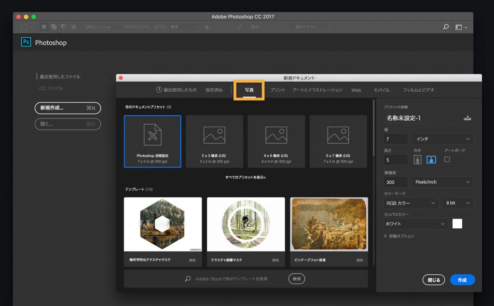
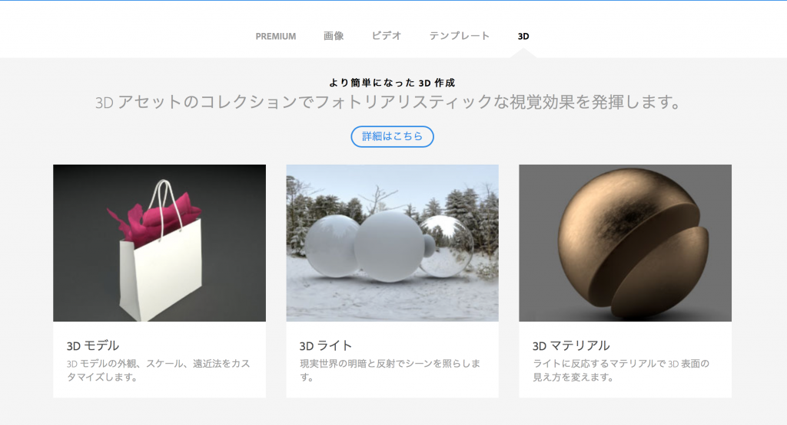
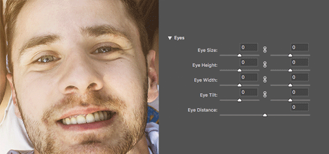

さあ始めよう！2017年リリースの新しいPhotoshop CCが登場
BY Muneo Tochiya 2016.11.03 公開 （2016.11.04 更新）
Sai 关于我
 Life is free —— Ps Tutorial
Life is free —— Ps Tutorial
本リリースの特徴は、「これから新しくPhotoshopを使う人」や「しばらくPhotoshopを使っていなかった人」向け。使い始めのハードルを低くしたPhotoshopだと思います。
まだPhotoshop CCを利用していない方は、この機会にぜひ体験版をダウンロードしてから、本ブログを見て実際の作業をしてみてください。まずは新しいPhotoshop CCを起動しましょう！
はじめの一歩「検索パネル」：
まず最初にCommand+F(Mac)、Control+F(Win)
を押してみてください。新しい「検索パネル」が開き、ツールの場所や使い方がわからなくても、キーワードを入れれば簡単にツールを呼び出せます。検索結果を元にチュートリアルを参照・習得もできるので、これからPhotoshopを始める方に最適です。
https://helpx.adobe.com/jp/photoshop/using/search.html
テンプレートを利用して、素早く作業を開始：
新規ドキュメントを作成する際、プリセットを使用して空白レイアウトから開始することもできますが、Adobe
Stockからプロフェッショナルがデザインした数百ものテンプレートを利用して、デザイン作業をすばやく始めることができるようになりました。
https://helpx.adobe.com/jp/photoshop/how-to/photoshop-templates.html

Adobe Stockとの強固な連携：
検索パネルやテンプレートの活用も、ストックフォトのAdobe Stockと密接に連携しています。さらにAdobe
Stockには3Dの素材が加わったり、手持ちの素材を基にした画像検索もできるようになりました。

stock.adobe.com
数多くの機能強化：
「継続してPhotoshop
CCを活用している」方もご安心ください。上記以外にも数多くの機能強化が図られています！一部ですがご紹介させていただきます。
・顔立ちを調整できる「ゆがみ」フィルター。目・鼻・口・輪郭など、顔のパーツを個別に調整できる便利な機能ですが、左右の目を個別に調整することができるようになりました。この機能は日本のユーザーからのフィードバックを元に実現した機能です。

・選択とマスクのワークスペース。多角形選択ツールが追加、選択範囲のプレビューを「高品質プレビュー」をチェックすることで、プレビューの品質と速度をコントロールすることができるようになりました。
・属性パネルの強化。調整、テキスト、マスクなど、様々な種類のレイヤーがありますが、属性パネルに何のレイヤーを選択しているのかを表示することができるようになっています。
https://www.adobe.com/jp/products/photoshop/features.html
いかがでしたでしょうか？2017年リリースのPhotoshop CCを是非お楽しみいただければ幸いです。
感谢您浏览。
Life is free —— Listen to me
【关于我】
Karyuu Kou=先森茶一=Life&Free
【关于画画】
-软件：SAI/PS。板子是影拓5，手绘描线是三菱针管笔。
-手/脚/人体/光影/场景/构图/透视/色彩/气氛 etc.关于画画方面的任何问题
不会在私信/评论中回复。想学习还是请去请教专业的老师。
-艺考画室学校报考/我初123高123了想学美术来不来的及/如何兼顾画画和学习/
我真的很喜欢画画但是家里人反对怎么办 etc.
不会在私信/评论中回复。自己的人生自己负责，咨询请找专业人士。
如有上述未涵盖的疑问和需要联络的事情请私信联系我。
本文内容依旧可能会继续修改添加。
最后再次对每一个人看到这里的人和喜欢我的作品的人表示感谢，谢谢你的关注和喜欢。
以上
（’- ’）ﾉｼ
AUTHOR

Karyuu Kou